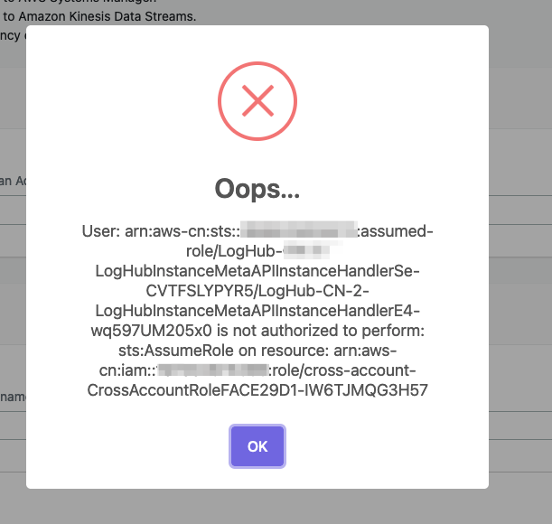
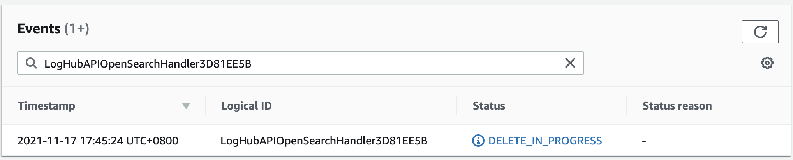

故障排查
以下介绍在使用日志通时可能遇到的错误或问题，以及解决方法。
Error: Failed to assume service-linked role arn:x:x:x:/AWSServiceRoleForAppSync
出现此错误的原因是该账户从未使用过 AWS AppSync 服务。您可以再次部署解决方案的 CloudFormation 模板。当您遇到错误时，AWS 已经自动创建了角色。
您也可以前往 AWS CloudShell 或本地终端并运行以下 AWS CLI 命令以链接 AppSync 角色：
aws iam create-service-linked-role --aws-service-name appsync.amazonaws.com
Error: Unable to add backend role
日志通仅支持启用了细粒度访问控制 的 Amazon OpenSearch Service 域。
您需要转到 Amazon OpenSearch Service 控制台，并编辑 Amazon OpenSearch Service 域的访问策略。
Error：User xxx is not authorized to perform sts:AssumeRole on resource

如果您发现该错误，请先确保您在跨账户日志摄取设置中正确填写了所有信息。然后请等待大约1分钟左右后再重试。
日志通使用了 AssumeRole 来列出或创建您成员账户中的 AWS 资源。 这些 IAM 角色是在您设置跨账户日志摄取时被创建的，他们需要几秒钟或者几分钟的时间才能生效。
Error: PutRecords API responded with error='InvalidSignatureException'
Fluent-bit agent 报错 PutRecords API responded with error='InvalidSignatureException', message='The request signature we calculated does not match the signature you provided. Check your AWS Secret Access Key and signing method. Consult the service documentation for details.'
请重启 fluent-bit agent. 比如在 Amazon Linux2 的 EC2 中, 运行一下命令:
sudo service fluent-bit restart
Error: PutRecords API responded with error='AccessDeniedException'
Fluent-bit agent 在 EKS 集群中向 Kinesis 发送日志时汇报了 "AccessDeniedException" 错误。验证是否正确设置 IAM 角色信任关系。
使用日志通 控制台:
- 打开日志通 控制台。
- 在左侧边栏中的日志源下，选择EKS 集群。
- 选择要检查的EKS集群。
- 点击IAM 角色 ARN， 这会在 AWS 控制台中打开 IAM 角色。
- 选择信任关系选项卡以验证 OIDC 提供方, 服务账户命名空间以及条件是否设置正确。
您可以前往 Amazon EKS IAM role configuration 获得更多信息。
我的 CloudFormation 堆栈在更新堆栈时被卡在删除 AWS::Lambda::Function 资源上。如何解决这个问题？
 Lambda函数驻留在一个VPC中，你需要等待相关的ENI资源被删除。
重启 EC2 实例后，代理状态为离线，如何让它在实例重启时自动启动？
这种情况通常发生在你已经安装了日志代理，但是在你创建任何日志摄取之前实例发生重启。如果至少有一个日志摄取，日志代理将自动重新启动。如果你有一个日志摄取，但问题仍然存在，你可以使用 systemctl status fluent-bit 来检查实例内部的状态来检查它在实例中的状态。
我已经切换 global tenant。但是，我仍然无法在 OpenSearch 中找到仪表板。
这通常是因为日志通 在创建索引模板和仪表板时收到了来自 OpenSearch 的 403 错误。可以通过按照下面的步骤手动重新运行 Lambda 函数来解决。
- 打开日志通 控制台，并找到有此问题的 AWS 服务日志管道。
- 复制 ID 部分的前 5 个字符。例如，你应该从 ID
c169cb23-88f3-4a7e-90d7-4ab4bc18982c复制c169c。 - 转到 AWS控制台 > Lambda。粘贴在函数过滤器中。这将过滤所有为这个 AWS 服务日志摄取创建的 lambda 函数。
- 点击名称包含 "OpenSearchHelperFn" 的 Lambda 函数。
- 在测试标签中，用任何事件名称创建一个新事件。
- 点击测试按钮来触发 Lambda，并等待 Lambda 函数的完成。
仪表板应该可以在 OpenSearch 中使用。
Fluent-bit 日志代理显示Error: version `GLIBC_2.25' not found
这个错误是由于 glibc版本过低. 对于1.2以上版本的日志通, 需要 glibc-2.25 或以上版本, 所以您需要先升级EC2内的glibc库文件。
以下分别是不同操作系统可使用的升级命令:
重要
我们强烈建议您先在测试环境使用下列命令。如果升级失败，可能会导致严重损失。
Redhat 7.9
对于 Redhat 7.9, 整个升级过程大概花费两小时, 请至少保证机器有10GiB以上的硬盘空间.
# 安装库文件
yum install -y gcc gcc-c++ m4 python3 bison fontconfig-devel libXpm-devel texinfo bzip2 wget
echo /usr/local/lib >> /etc/ld.so.conf
# 创建 tmp 目录
mkdir -p /tmp/library
cd /tmp/library
# 安装 gmp-6.1.0
wget https://ftp.gnu.org/gnu/gmp/gmp-6.1.0.tar.bz2
tar xjvf gmp-6.1.0.tar.bz2
cd gmp-6.1.0
./configure --prefix=/usr/local
make && make install
ldconfig
cd ..
# 安装 mpfr-3.1.4
wget https://gcc.gnu.org/pub/gcc/infrastructure/mpfr-3.1.4.tar.bz2
tar xjvf mpfr-3.1.4.tar.bz2
cd mpfr-3.1.4
./configure --with-gmp=/usr/local --prefix=/usr/local
make && make install
ldconfig
cd ..
# 安装 mpc-1.0.3
wget https://gcc.gnu.org/pub/gcc/infrastructure/mpc-1.0.3.tar.gz
tar xzvf mpc-1.0.3.tar.gz
cd mpc-1.0.3
./configure --prefix=/usr/local
make && make install
ldconfig
cd ..
# 安装 gcc-9.3.0
wget https://ftp.gnu.org/gnu/gcc/gcc-9.3.0/gcc-9.3.0.tar.gz
tar xzvf gcc-9.3.0.tar.gz
cd gcc-9.3.0
mkdir build
cd build/
../configure --enable-checking=release --enable-language=c,c++ --disable-multilib --prefix=/usr
make -j4 && make install
ldconfig
cd ../..
# 安装 make-4.3
wget https://ftp.gnu.org/gnu/make/make-4.3.tar.gz
tar xzvf make-4.3.tar.gz
cd make-4.3
mkdir build
cd build
../configure --prefix=/usr
make && make install
cd ../..
# 安装 glibc-2.31
wget https://ftp.gnu.org/gnu/glibc/glibc-2.31.tar.gz
tar xzvf glibc-2.31.tar.gz
cd glibc-2.31
mkdir build
cd build/
../configure --prefix=/usr --disable-profile --enable-add-ons --with-headers=/usr/include --with-binutils=/usr/bin --disable-sanity-checks --disable-werror
make all && make install
make localedata/install-locales
# 清理 tmp 目录
cd /tmp
rm -rf /tmp/library
Ubuntu 22
sudo ln -s /snap/core20/1623/usr/lib/x86_64-linux-gnu/libcrypto.so.1.1 /usr/lib/x86_64-linux-gnu/libcrypto.so.1.1
sudo ln -s /snap/core20/1623/usr/lib/x86_64-linux-gnu/libssl.so.1.1 /usr/lib/x86_64-linux-gnu/libssl.so.1.1
sudo ln -s /usr/lib/x86_64-linux-gnu/libsasl2.so.2 /usr/lib/libsasl2.so.3
Amazon Linux 2023
sudo su -
yum install -y wget perl unzip gcc zlib-devel
mkdir /tmp/openssl
cd /tmp/openssl
wget https://www.openssl.org/source/openssl-1.1.1s.tar.gz
tar xzvf openssl-1.1.1s.tar.gz
cd openssl-1.1.1s
./config --prefix=/usr/local/openssl11 --openssldir=/usr/local/openssl11 shared zlib
make
make install
echo /usr/local/openssl11/lib/ >> /etc/ld.so.conf
ldconfig